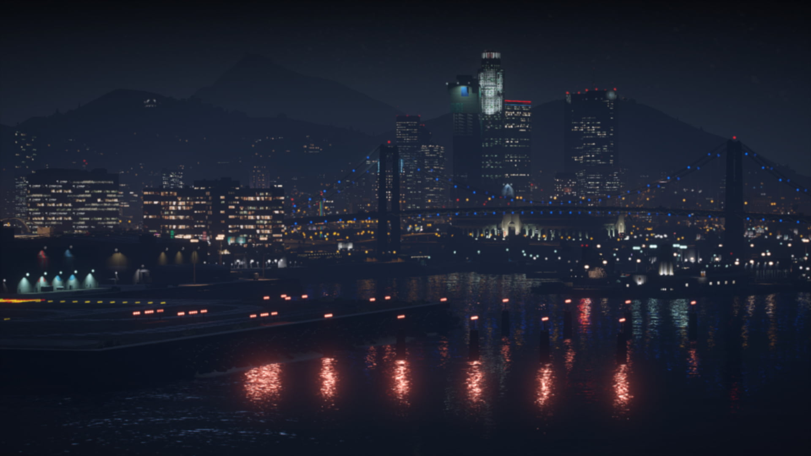

LA FORTE ITALIA
Home
Caratteristiche
Regolamento
Regolamento FDO
Discord

REGOLAMENTO
FORZE
DELL'ORDINE
Norme ufficiali per Polizia, Carabinieri, Guardia di Finanza e Unità Speciali.
1. PRINCIPI GENERALI
Le FDO devono mantenere un comportamento professionale e rispettoso.
È vietato abusare del proprio ruolo o dei propri poteri.
Ogni intervento deve essere giustificato da motivazioni RP.
È obbligatorio mantenere un linguaggio consono al ruolo.
2. UTILIZZO DELLE ARMI
Le armi letali possono essere utilizzate solo in caso di minaccia reale.
Il taser è la prima arma da utilizzare in caso di fuga o resistenza.
È vietato sparare ai veicoli in movimento salvo casi estremi.
Le armi pesanti sono riservate alle unità autorizzate.
3. INSEGUIMENTI
Gli inseguimenti devono essere proporzionati al reato.
È vietato speronare senza autorizzazione radio.
Le unità devono coordinarsi tramite radio in modo chiaro.
Le unità a piedi devono evitare di mettersi davanti ai veicoli in fuga.
4. ARRESTI E FERMI
Ogni arresto deve essere motivato e spiegato al cittadino.
È obbligatorio leggere i diritti al fermato.
È vietato abusare delle perquisizioni.
La detenzione deve essere proporzionata al reato.
5. RADIO E COMUNICAZIONI
La radio deve essere utilizzata solo per comunicazioni operative.
È vietato parlare sopra altri operatori.
Ogni intervento deve essere annunciato e confermato.
6. VEICOLI DI SERVIZIO
I veicoli devono essere utilizzati in modo responsabile.
È vietato utilizzare veicoli non assegnati al proprio reparto.
È obbligatorio mantenere il mezzo in condizioni adeguate.
7. SANZIONI
Richiamo verbale.
Richiamo scritto.
Sospensione temporanea.
Rimozione dal corpo.